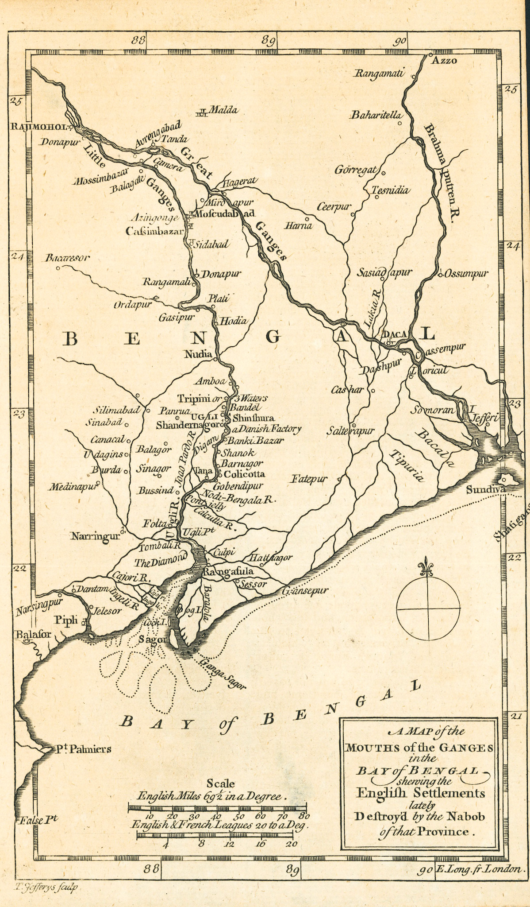
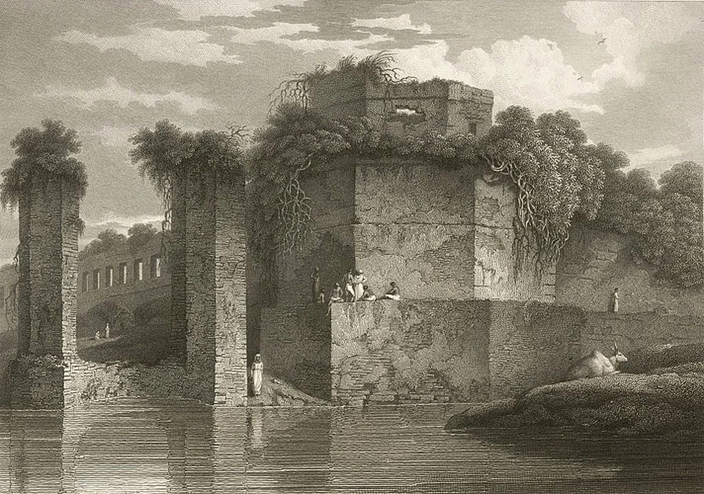
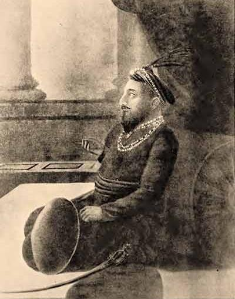
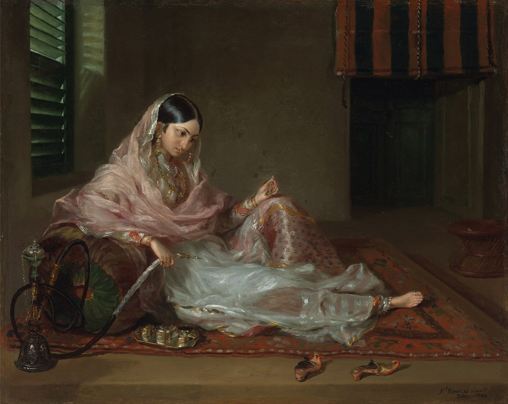
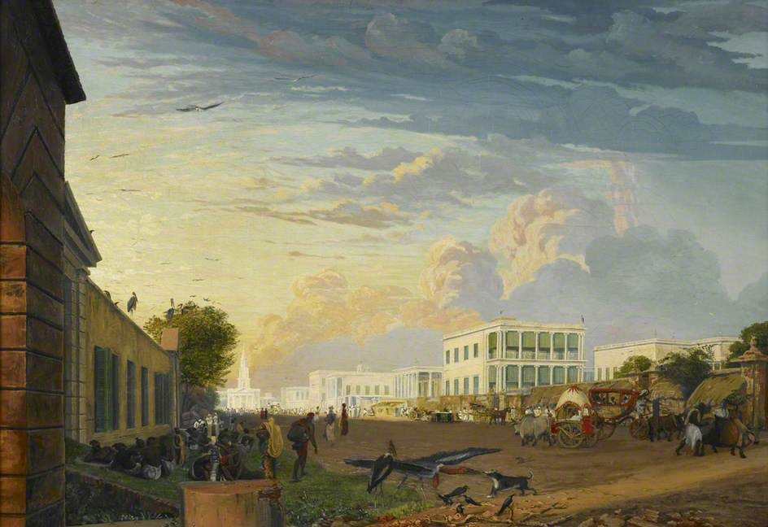
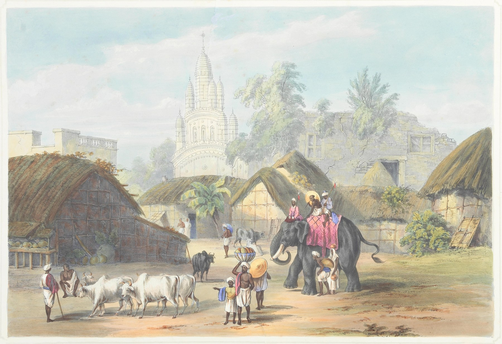

Two Cities, One Delta

A Map of the Mouth of the Ganges in the Bay of Bengal Shewing the English Settlements Recently Destroy'd by the Nabob of that Province, the same river system whose geography would help decide which city got the press.
It is easy, looking back from the twenty-first century, to assume that Calcutta's rise to the top of Bengal's urban hierarchy was inevitable, that a great port city was always destined to outgrow an inland provincial capital. Nothing about the map of Bengal in the early eighteenth century suggested that outcome. Dhaka, not Calcutta, had spent most of the previous century as the delta's most important city, the seat of a Mughal governor, a garrison town, and the center of a textile trade whose finest product, a cotton so fine it was said to be woven from wind, was famous from London to Istanbul. Calcutta, by contrast, was a cluster of villages on the Hooghly's east bank, notable mainly for a fortified English trading post that had existed for less than two generations.
By the time this history's next chapter opens, in January 1780, that relationship had inverted almost completely. Calcutta had a Supreme Court, a Governor-General, a rapidly growing population of merchants and administrators, and, that same month, Bengal's first printing press turning out a weekly newspaper. Dhaka had none of these things, and would not have a newspaper of its own until Rangpur Bartabaha's brief 1847 appearance and Dhaka Prokash's more lasting 1861 debut, a lag of more than eighty years behind Calcutta's first paper. Explaining that inversion, and the eighty year gap in publishing history it produced, is the job of this chapter.
The explanation is not a single event. It is a sequence of administrative decisions, each individually modest, that compounded over roughly seventy years into a decisive and, in retrospect, almost irreversible shift of political, commercial, and eventually informational weight from one city to the other. Understanding that sequence matters for more than antiquarian interest. It set a pattern, a capital city enjoying disproportionate access to print and the institutions that depend on it, a provincial hinterland waiting decades for the same access, that recurs again and again across the chapters that follow, through the colonial period, through Pakistan, and arguably into the present.
Dhaka's Mughal Zenith

A sketch of the Lalbagh Fort bastion by Sir Charles D'Oyly, whose depictions of early nineteenth century Bengal remain among the more widely reproduced European visual records of the region's Mughal era architecture.
Dhaka's rise began in 1610, when the Mughal subahdar Islam Khan Chishti shifted the provincial capital of Bengal there from Rajmahal, partly to bring imperial authority closer to the delta's restive eastern chiefs and to the naval and riverine forces needed to control them. Renamed Jahangirnagar after the reigning emperor, the city grew over the following century into one of the wealthiest urban centers in Mughal India, a garrison and administrative seat with a substantial European and Armenian merchant presence drawn there by one commodity above all others: muslin, the almost impossibly fine hand-woven cotton produced by artisans in and around the city.
Estimates of Dhaka's population at its Mughal-era peak vary considerably depending on methodology and are, inevitably, imprecise for a pre-census era, but a range of historical estimates puts the figure as high as a million residents in the early eighteenth century, a number that, if accurate even approximately, would have made Dhaka one of the largest cities anywhere in the world at the time. The city reportedly supported tens of thousands of skilled textile workers alone, a specialized workforce whose product commanded prices among the highest of any textile traded across the early modern world. This was not a sleepy provincial outpost. It was a manufacturing and administrative capital with genuine claims to global economic significance, and any account of Bengal's later publishing history has to start from the fact that, on paper, Dhaka looked like the more obvious candidate to become the region's center of commerce, government, and eventually print.
Dhaka's importance rested on a fragile combination, however: imperial patronage, a specialized artisan economy, and a favorable position within Mughal administrative geography. Each of those supports would weaken or vanish entirely within a few decades of the mid-eighteenth century, and the city's fortunes weakened with them in a way that, as later sections show, Calcutta's more diversified colonial economy never had to face in quite the same form.
Even after Murshid Quli Khan's revenue administration relocated westward, described in the next section, Dhaka retained a residual administrative role that is easy to overlook. The city continued to house a Naib Nazim, a deputy governor answering nominally to the Nawab in Murshidabad, along with a garrison and a functioning system of courts and religious institutions. This meant Dhaka's decline, unlike a city simply abandoned by its rulers, was gradual and partial rather than sudden and total, a slow draining of significance rather than an overnight collapse. That gradualism matters for understanding why the city's eventual re-emergence as a publishing center, covered in Part II of this history, did not require rebuilding an urban settlement from nothing. It required reviving commercial and literary energy in a city that, even at its lowest point, had never entirely stopped functioning as a regional administrative seat.
The Capital Moves, Twice

Murshid Quli Khan, the Mughal diwan who shifted Bengal's revenue administration from Dhaka to the town he renamed Murshidabad around 1704, and who was elevated to Nawab of Bengal in 1717.
Dhaka's decline as an administrative center actually predates the East India Company's rise to power by decades, and its cause was internal to Mughal Bengal rather than a product of colonial intervention. Around 1704, the Mughal governor Murshid Quli Khan, then serving as diwan, the province's chief revenue officer, moved his own revenue administration from Dhaka to a smaller town further west on the Bhagirathi-Hooghly river system, which he renamed Murshidabad after himself. When Murshid Quli Khan was elevated to full Nawab of Bengal in 1717, Murshidabad rather than Dhaka became the seat of the province's combined revenue and political authority, relegating Dhaka to what several historians have described as something closer to a second capital, still important, still garrisoned, but no longer the single center of gravity it had been under Islam Khan and his immediate successors.
This first move, from Dhaka to Murshidabad, was a Mughal-era decision made for Mughal-era reasons, chiefly Murshidabad's more central position for administering an increasingly westward-oriented and revenue-focused provincial government. It happened entirely independent of the East India Company, which at the time was still decades away from holding any political authority in Bengal at all. It matters here because it establishes that Dhaka's decline began as a story about shifting Mughal administrative priorities, not simply a story about European colonialism displacing an Indian capital. By the time the Company's power began expanding after Plassey in 1757, Dhaka had already spent roughly half a century as Bengal's second city rather than its first.
The second move is the one covered in the previous chapter: Warren Hastings' 1772 transfer of the Company's administration from Murshidabad to Calcutta, followed by the Regulating Act of 1773, which made Calcutta the seat of a new Supreme Court and the capital from which the Governor-General oversaw the Company's other Indian territories. Dhaka was not even the loser in this second transition. Murshidabad was. But the cumulative effect of both moves, first away from Dhaka in 1704 and 1717, then past Murshidabad to Calcutta in 1772, left Dhaka twice removed from Bengal's seat of power by the time this history's earliest newspapers began appearing. A city that had once housed a subahdar's court was now, from the perspective of the new colonial capital, a district town: administratively significant, but no longer where decisions, revenue, or, crucially, printing presses would naturally concentrate.
Bengal's Capital, on the Move
Two relocations, roughly seventy years apart: Dhaka to Murshidabad in 1704 and 1717, then Murshidabad to Calcutta in 1772. Click a marker for the date.
A Muslin City Undone

A woman wearing Dhakai muslin, the near-transparent hand-woven cotton that made the city's weavers famous and whose export trade collapsed within a few decades of the disruptions described below.
Losing administrative primacy might, on its own, have left Dhaka as a wealthy commercial city even without a governor's court, the way many manufacturing towns thrive without being capitals. What made Dhaka's decline so much steeper than a simple administrative demotion was the near simultaneous collapse of the muslin trade that had underwritten its wealth in the first place. The causes were several and compounding. The Battle of Plassey in 1757 and the years of political instability that followed disrupted the patronage networks, Mughal, nawabi, and aristocratic, that had sustained demand for the most luxurious and expensive grades of muslin. Exports fell through the second half of the eighteenth century, and by some estimates had dropped to roughly half their 1747 levels by the century's end.
The deeper blow came from a direction Dhaka's artisans could not have anticipated: industrial competition from Britain itself. As mechanized textile manufacturing developed in England through the late eighteenth and early nineteenth centuries, cheap, machine-spun cotton goods flooded markets that had once bought hand-woven Dhaka muslin, undercutting a labor-intensive artisan product that, however exquisite, could not compete on price against factory output. By the middle of the nineteenth century, what remained of the trade was valued at a small fraction of its earlier scale. The specialized weaving communities that had made Dhaka one of the wealthiest textile cities in the early modern world dispersed, and much of that specific technical knowledge, the particular skills needed to spin and weave the finest muslin threads, was effectively lost within a generation or two.
The population figures, however imprecise for a period before regular census taking, tell a consistent story of steep decline. A city whose population may have approached or exceeded a million residents at its early eighteenth century peak had, by most nineteenth century accounts, shrunk dramatically, contemporary observers in the early 1800s describing it as a shadow of its former self. The first reasonably reliable colonial census, in 1872, recorded a population of just 69,212, rising only slowly across the rest of the nineteenth century, to 79,076 in 1881. Whatever the precise trajectory of the decline in between, and historians differ on exactly how steep it was decade by decade, the direction and the scale are not in serious dispute: Dhaka entered the nineteenth century a fraction of the city it had been a hundred years earlier, at almost exactly the same historical moment that Calcutta was entering its own period of fastest growth.
Calcutta and Dhaka, Around 1881
Each figure represents roughly 20,000 people. Dhaka's 79,076 from the 1881 census against Calcutta's approximately 612,300, recorded for the wider municipal area around the same period.
Calcutta figure reflects the wider municipal area in the 1876 to 1881 range; Dhaka figure is the 1881 census count cited above. Boundaries for both cities shifted across the nineteenth century, so this is a snapshot, not a precise like-for-like comparison.
It is worth flagging, rather than glossing over, a genuine debate among economic historians about how much of this decline to attribute to deliberate colonial policy, as opposed to broader structural shifts in global trade that would have disadvantaged a labor-intensive, luxury handicraft industry regardless of who governed Bengal. Some historians emphasize specific East India Company practices, including its near monopoly purchasing power over Bengal's textile producers in the years immediately after the Diwani grant, as an active driver of deindustrialization. Others place more weight on the structural fact that no hand-woven textile industry anywhere in the world, however skilled its artisans, could indefinitely outcompete mechanized factory production once that production reached sufficient scale and reliability. This site does not attempt to adjudicate that debate. What matters for this chapter's purposes is simpler and less contested: whatever combination of policy and structural change caused it, Dhaka's economic base collapsed at almost precisely the moment Calcutta's was expanding, and that timing, whatever its ultimate causes, is what determined where Bengal's first press could plausibly take root.
What Calcutta Had That Dhaka Did Not

A view up Old Court House Street towards St Andrew's Church, in the heart of the commercial and administrative district that gave Calcutta the density Dhaka's more dispersed population could not match.
Set against Dhaka's twin misfortunes, the loss of administrative primacy and the collapse of its export economy, Calcutta's advantages by 1780 were not subtle. It had the Supreme Court, the Governor-General, and the entire apparatus of Company government described in the previous chapter, generating the paperwork demand that justified importing a press in the first place. It had the country trade, the network of British, Armenian, Parsi, and Indian merchants doing business up and down the Hooghly, providing both the capital and the advertising revenue that made a commercial newspaper financially viable rather than a vanity project. And it had direct, unbroken access to the sea route back to London, the physical supply line for type, paper, trained printers, and the steady stream of European news that filled a newspaper's front page in this period.
Calcutta also had something less tangible but equally important: a rapidly growing population of exactly the kind of reader a newspaper needs to survive, literate in English, commercially or administratively engaged, and concentrated in one place rather than scattered across a river delta. Estimates for Calcutta's population in this period are, like Dhaka's, imprecise, but the trajectory is unambiguous and runs in the opposite direction from Dhaka's: a modest trading settlement of a few tens of thousands of people in the mid-eighteenth century grew, across the following century, into what became widely described as the second city of the British Empire after London itself, with population estimates climbing well past half a million by the mid-nineteenth century and continuing upward from there.
None of Calcutta's advantages were about culture or literary tradition in any direct sense. As the first chapter of this history established, Bengal's manuscript and oral traditions were not concentrated in Calcutta any more than anywhere else in the delta, and if anything Dhaka's older courtly and religious institutions gave it a longer pedigree in that department. What Calcutta had was infrastructure: political authority, commercial density, and a functioning sea link to the source of printing technology itself. Those are precisely the ingredients this history's second chapter identified as the actual drivers of where a colonial-era press could take root, and Calcutta, almost by accident of Mughal and then Company administrative decisions rather than any inherent cultural superiority, ended up with all three at once.
Two Cities, Four Snapshots
The table below lines the two cities up side by side at four points across roughly a century and a quarter: the 1780s, when Calcutta's first newspapers appeared and Dhaka had none; the 1820s, a generation into Calcutta's press boom, with Dhaka still without a paper of its own; the 1870s, shortly after Dhaka finally got a sustained newspaper tradition of its own, decades behind Calcutta's; and 1901, by which point Calcutta had been the capital of British India for well over a century. Switch between snapshots to see how the gap in administrative status, population, and printing infrastructure opened, and how slowly Dhaka began to close it.
Calcutta and Dhaka, Side by Side
Approximate figures drawn from historical estimates and, from 1872 onward, colonial census counts. Population figures before regular census taking are necessarily rough.
| Measure | Calcutta | Dhaka |
|---|
Newspaper counts include papers founded up to and publishing near the snapshot year, not cumulative historical totals.
Two Kinds of Public

A view of Calcutta and its environs by Sir Charles D'Oyly, showing the dense, fortified settlement of merchants, officials, and coffee houses that gave the city's newspaper readers a shared public life Dhaka's more agrarian hinterland could not replicate.
The comparison table makes the gap in raw numbers visible, but it is worth pausing on what that gap actually meant for the kind of public life each city could support. A newspaper needs more than a population figure. It needs a dense enough concentration of literate, commercially or politically engaged readers, within reach of a single press, to generate both subscription revenue and a supply of writers, correspondents, and news worth printing. Calcutta had exactly that kind of public by the 1780s: merchants who needed shipping notices, officials who needed to read Company regulations, and a growing English-educated professional class hungry for news from home and gossip from the Governor-General's court. Dhaka's population, whatever its size in absolute terms across this period, was oriented very differently, organized around artisan production and, increasingly after the 1750s, around economic contraction rather than administrative or commercial expansion.
This distinction between a capital's public and a provincial city's public recurs throughout this site's history, well beyond the specific case of eighteenth century Dhaka and Calcutta. A newspaper is, among other things, a bet that enough people in one place want to read the same thing at the same time, badly enough to pay for it or to attract advertisers who will. Capitals concentrate exactly the kind of institutional, commercial, and administrative activity that generates that demand almost automatically. Provincial cities, even large and historically significant ones like eighteenth century Dhaka, have to generate it themselves, from whatever local commercial or literary activity survives, and that is a far slower and more fragile process, dependent on exactly the kind of local literary and reformist energy that, as later chapters show, eventually built Dhaka's own press tradition from the 1850s onward, but only after decades of comparative silence.
There is also a physical dimension to this that is worth making explicit. Calcutta's earliest newspaper readers did not simply subscribe and read alone at home. Much of the paper's readership and social function played out in the city's coffee houses, taverns, and merchant exchanges, spaces where a single subscribed copy could be read aloud or passed among a dozen or more people, multiplying its practical reach well beyond its nominal circulation figures. This kind of shared, semi-public reading culture depends on physical density: enough coffee houses, enough taverns, enough merchants' offices within walking distance of one another, to sustain a habit of collective reading and discussion. Calcutta, packed with Company officials, merchants, and their households within a compact fortified settlement, had exactly that density by the 1780s. A comparably sized population spread across the wider, more agrarian hinterland surrounding a diminished Dhaka simply could not replicate it, whatever its raw literacy rate might have been.
A Gap That Outlasted Its Cause
By the time Dhaka Prokash began regular publication in 1861, the specific administrative decisions that had shifted Bengal's capital away from the city, Murshid Quli Khan's 1704 move to Murshidabad, Warren Hastings' 1772 move to Calcutta, were well over a century and eighty years old respectively. The muslin trade that had once made Dhaka one of the wealthiest textile cities in the world had never recovered, and would not meaningfully recover. And yet Calcutta's press, by 1861, was not merely eighty years old but had already passed through several distinct eras covered in the chapters ahead: an unruly, unregulated founding period defined by Hicky's Bengal Gazette, a wave of officially sanctioned and missionary papers through the 1780s and 1790s, the first Bengali-language newspaper in 1818, and a generation of reform-minded Bengali editors using the press as a tool of social and political argument through the 1820s, 1830s, and 1840s. Dhaka's press tradition, by contrast, was just beginning.
This is the central argument of this chapter, restated plainly. The gap between Calcutta and Dhaka's publishing histories was never really about culture, literacy, or intellectual capacity, all of which Dhaka and its hinterland possessed in ample measure, as the region's later Muslim Bengali literary press, covered starting in Part III of this history, would go on to demonstrate. It was about infrastructure: who had the administrative concentration, the commercial density, and the sea-linked supply chain that a printing press in this period actually required. Calcutta acquired all three, almost by administrative accident, a full generation before Dhaka had any realistic prospect of acquiring even one of them. That accident of timing, more than any deliberate colonial strategy or cultural preference, is why the story of Bengali print begins on the banks of the Hooghly rather than the banks of the Buriganga, and why Dhaka's own press history, when it finally arrives in this account, arrives as an act of catching up rather than an equal start.
The next chapter returns to Calcutta itself, and to the specific newspaper that opened this account: James Augustus Hicky's Bengal Gazette, the paper that in January 1780 became the first to actually put Calcutta's accumulated advantages to use, and the first to discover just how uncomfortable a colonial administration could become when the printing press it had inadvertently made possible turned its attention to the administration itself.